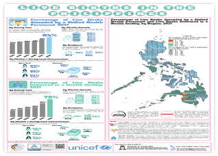
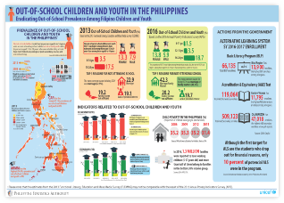
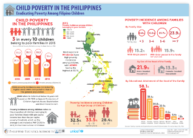
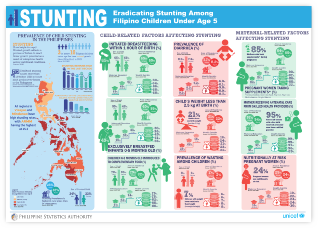
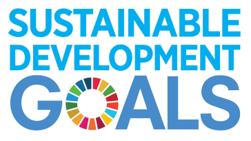
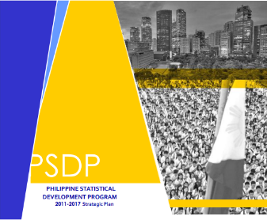
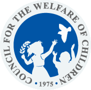

The United Nations Children's Fund (UNICEF) supports the government in strengthening evidence generation and capacity building for planning including social sector management information systems to facilitate reporting and monitoring of key social indicator.
The UNICEF-PSA Project seeks to conduct data assessment in terms of the availability of the latest data on child poverty indicators, update the database on statistics on child poverty, and prepare the Statistical Report on the Child Poverty Indicators. The Project also aims to produce equity focused profiles that will focus on child indicators to provide access and utilization of disaggregated information at national and sub-national levels to monitor and evaluate policies and plans.
The Equity Profile of Children developed by PSA and UNICEF focuses on child indicators to provide access and utilization of disaggregated information at national and sub-national levels to monitor and evaluate policies and plans. The Equity Profiles focus on following:
One of the objectives of updating the national database on child poverty is to provide information focusing on how poverty and disparities impact children in order to support efforts that protect children from risk, adversity and disadvantage. It proposes to look at gaps and opportunities in national poverty reduction strategies, including the demographic and economic context, employment, public and private social expenditures, fiscal space, and foreign aid. It also gives importance in making available updated and relevant statistics on children, particularly those living in poverty.
In recognition of the Philippines' commitment to achieving the SDGs, it is deemed important to compile multi-dimensional information on children in poverty by updating the statistical database on child poverty indicators based on available data sources.
The databases presented in this section are multi-dimensional information on children in poverty based on available data sources.
Visual summaries of key child poverty indicators across the Philippines.

Live Births

Out-of-School Children

Child Poverty

Stunting

The 2030 Agenda, its 17 Goals and 169 targets are a universal set of goals and targets that aim to stimulate people-centered and planet-sensitive change.
Download
The PSDP articulates the vision, direction, strategies and priority statistical programs and activities to be undertaken in the PSS for medium term in order to meet current and emerging needs of the national and local planners, policy-makers and data producers.
Download
Coordinates the implementation and enforcement of all laws, formulate, monitor and evaluate policies, programs and measures for children.
DownloadOpen Data Initiatives of the Department of Social Welfare and Development.
Download
UNICEF data: Monitoring the situation of children and women.
Download